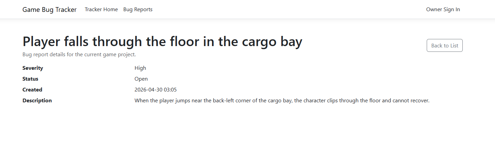
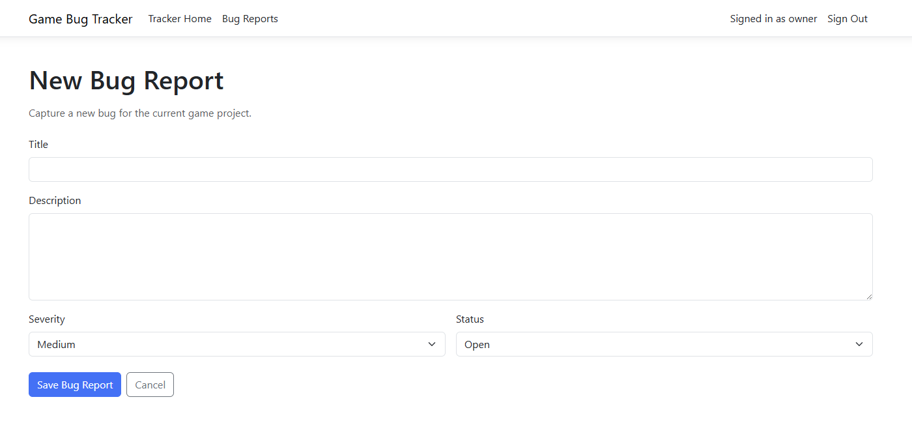
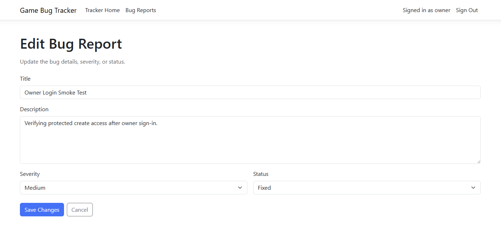
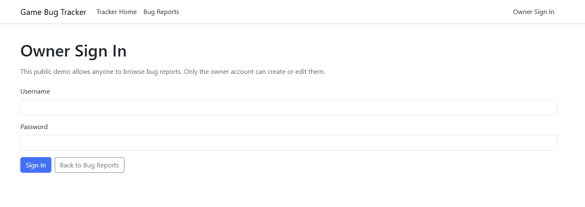

Browse the public bug list to review current issues.
Tooling / workflow mission
Game Bug Tracker
A public-safe ASP.NET Core Razor Pages bug tracker built for game production workflows. Visitors can browse issues anonymously, while authenticated owner access controls creation and edits.
C#
Razor Pages
.NET 10
EF Core
SQLite
Version 1 is ready: public home and bug list, bug details, owner-only create and edit flows, validation, EF Core migrations, and automatic demo-data seeding are all in place.
Overview
Game Bug Tracker is a portfolio project focused on production-support tooling for games. Instead of building a generic dashboard, I used this app to show that I can design a small but real workflow system with clear authorization boundaries, practical persistence, and safe public visibility.
Why I built it
Game teams need simple ways to capture issues, review severity, and track progress without turning the workflow into a mess. I built this project to practice clean C# web development around a real game-production use case: tracking bugs in a structured, understandable way that can be shown publicly without exposing admin control.
Version 1 scope
- Public home page with a clear explanation of the demo and version-1 goal.
- Public bug list with title, severity, status, and created timestamp.
- Public bug details page for individual issue review.
- Owner-only create bug page.
- Owner-only edit bug page.
- Validation for required bug titles and descriptions.
- Entity Framework Core migrations on startup.
- Automatic demo-data seeding when the database is empty.
Core workflow
Open an individual bug page to inspect severity, status, description, and creation time.
The owner signs in through a dedicated auth page when updates are needed.
Create new reports or edit existing ones with validated form input and enum-driven state values.
Current interface coverage
Introduces the tool, explains the public-demo model, and points visitors to the bug list or owner sign-in flow.
Shows the active reports table with title, severity, status, and created date for quick triage scanning.
Presents the report title, severity, status, creation timestamp, and full description in one clean view.
Use validated title and description fields plus enum-backed severity and status controls.
The login page explains the public-safe model clearly and even handles the case where an admin password has not yet been configured in the environment.
Version 1 screenshots




Workflow diagram
Public Home
Explain the demo and direct visitors into the tracker.
Bug List
Scan titles, severity, status, and created timestamps.
Bug Details
Inspect full issue context and reproduction notes.
Owner Sign In
Authenticate only when write access is needed.
Create / Edit
Capture or update reports with validated state controls.
Security model
- Anonymous visitors can browse the tracker without signing in.
- Only the owner account can create or edit bug reports.
- The owner password is not stored in source control.
- Credentials are expected to come from environment configuration.
- Cookie authentication is configured with secure defaults like
HttpOnly, HTTPS-only cookies, and a fixed login path.
Architecture notes
- ASP.NET Core Razor Pages keeps the workflow page-driven and easy to follow.
- Entity Framework Core handles persistence and schema updates through migrations.
- SQLite keeps version 1 lightweight and demo-friendly for a single-instance deployment.
- The
BugReportmodel uses explicit validation for title and description lengths. BugSeverityandBugStatusenums keep report state consistent across the UI.- Startup seeding creates a useful first-run demo instead of leaving the project empty.
What this project proves
- I can build a real .NET web app around a practical workflow instead of a toy example.
- I understand public-safe app design and authorization boundaries.
- I can use EF Core and SQLite in a clean small-project architecture.
- I can prepare a portfolio project for demo use with seeded data, migrations, and deployment-aware configuration.
What I learned
This project taught me how much professionalism comes from the boundaries around a tool, not just the forms inside it. Public visibility, protected write access, seeded state, and environment-driven secrets all mattered just as much as the page flow.
Next improvements
- Status and severity filters for faster scanning.
- Search and pagination for larger bug sets.
- Screenshot attachments or reproduction media for reports.
- Comments, activity history, or an audit trail.
- Assignment / ownership fields for team workflow.
- A hosted database option beyond SQLite for a more serious deployment.